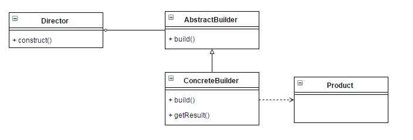

Builder Pattern by Juicyroach
Posted on JUN 21, 2015 at 11:00 AM

● 目地 : 將複雜的建構過程獨立出來並封裝起來
● 使用時機 : 建立複雜的結構時使用，例如Composite的model
● 想法 : 若建立一物件須經由多個步驟，且可能改變步驟的程序。應該將這些複雜的事情封裝起來，並指提供外部一個統一的界面。
● UML :
● 程式與解說 :
首先要先建立統一抽象的builder類別，並且將建立物件所需的步驟之抽象方法建立出來。
public abstract class AbstractPizzaBuilder {
protected Pizza pizza;
public Pizza getPizza() {
return this.pizza;
}
public void createNewPizza() {
this.pizza = new Pizza();
}
public abstract void chooseDough();
public abstract void putTopping();
}
同時將具體實現內容的Builder也建立出來
public class HawaiianPizzaBuilder extends AbstractPizzaBuilder {
@Override
public void chooseDough() {
pizza.setDough("Hawaiian Dough");
}
@Override
public void putTopping() {
pizza.setTopping("Hawaiian Topping");
}
}
接著建立負責執行與處理builder的物件Director。
public class Director {
private AbstractPizzaBuilder builder;
public void setBuilder(AbstractPizzaBuilder builder) {
this.builder = builder;
}
public Pizza getPizza() {
return builder.getPizza();
}
public void createPizza() {
builder.createNewPizza();
builder.chooseDough();
builder.putTopping();
}
}
Model物件如下。
public class Pizza {
private String dough;
private String topping;
public void setDough(String dough) {
this.dough = dough;
}
public void setTopping(String topping) {
this.topping = topping;
}
}
最後當Client要使用時，只需要知道Abstract的Builder與負責執行的Direction，即可獲得結果物件。
public class Client {
public static void main(String[] args) {
Director director = new Director();
AbstractPizzaBuilder builder = new HawaiianPizzaBuilder();
director.setBuilder(builder);
director.createPizza();
Pizza pizza = director.getPizza();
}
}
有得時候會省略Direciton，並且將內容放入AbstractBuilder中，雖然較為簡單，但也失去了一些彈性。